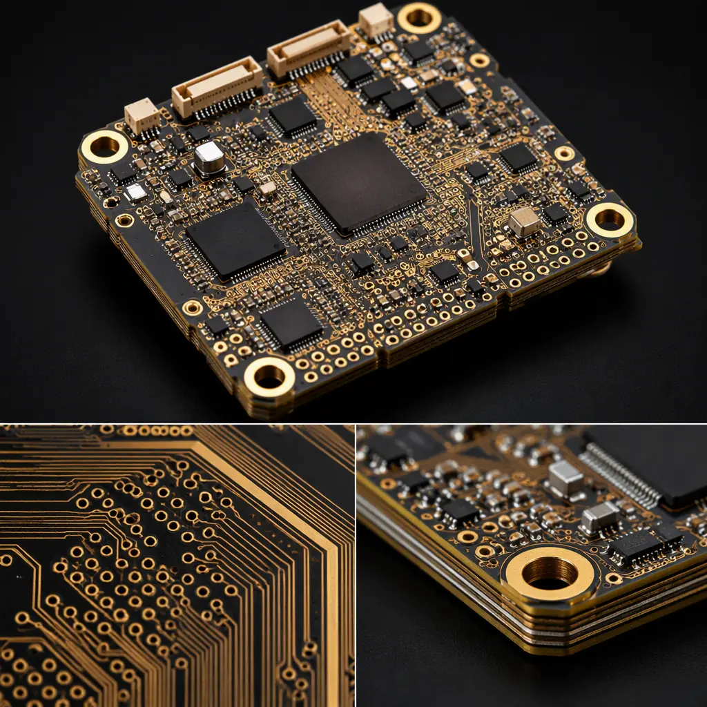
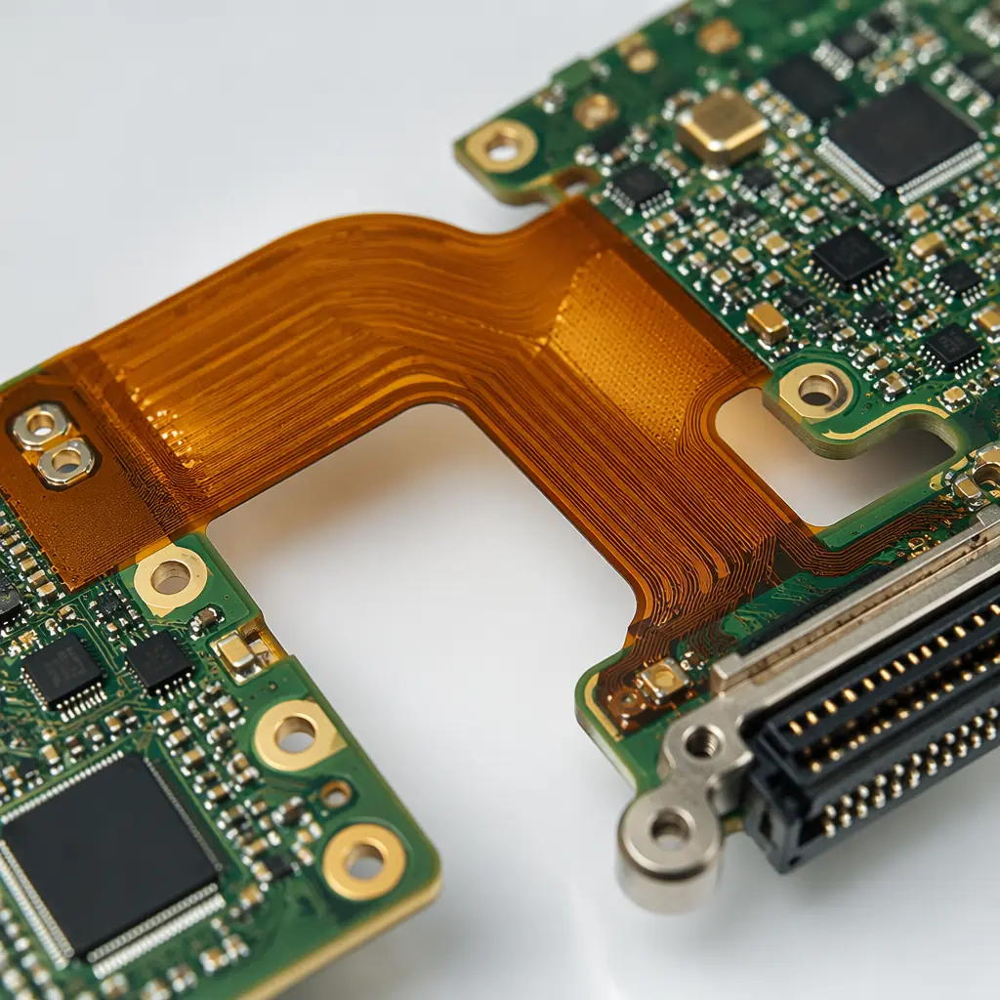

The urban air mobility sector is transitioning from concept demonstrators to type-certified production aircraft. Archer, Joby, Lilium, and Volocopter have collectively logged over 10,000 test flight hours, and the FAA's SFAR for powered-lift certification is now in effect. Behind every eVTOL flight control computer, battery management system, and motor inverter sits a stack of PCBs that must simultaneously satisfy three regulatory frameworks that rarely overlap: DO-160G for environmental qualification, AS9100 for manufacturing quality, and DO-254/DO-178C for design assurance on safety-critical hardware and software. Getting a PCB qualified for an eVTOL is not about hitting one spec — it is about threading the needle across all three without adding grams that erase payload capacity.
At Huaxing PCBA, our AS9100-certified facility supports eVTOL programs with polyimide and high-Tg laminate capability, 32-layer HDI stackups with 0.4mm pitch BGAs, high-voltage power boards rated for 800V SiC/GaN switching, and full lot traceability to raw material mill certificates. This article maps the PCB technologies, qualification requirements, and supply chain considerations specific to electric aircraft — from two-seat air taxis to heavy-lift cargo drones.

Why eVTOL Electronics Demand Different PCB Design
Electric aircraft impose a set of PCB constraints that no other industry combines: weight sensitivity at the gram level, rotor-induced vibration across a broad frequency spectrum, thermal extremes from tarmac to cruise altitude, dual-redundant architectures mandated by certification authorities, and EMI/EMC management inside composite airframes that provide zero natural shielding. A PCB stackup that works for automotive power electronics — where weight is secondary and a steel chassis provides a Faraday cage — will fail in an eVTOL on at least three of these five axes.
Weight Sensitivity — Every Gram Matters in Electric Aircraft
A eVTOL aircraft carries a battery mass budget that directly trades against payload. Reducing PCB weight by 40% through HDI stackups — 8-12 layer microvia designs with thinner dielectrics and 0.4mm pitch BGAs — can save 200-500 grams across an avionics suite, translating to meaningful endurance gains. Traditional through-hole stackups with 0.2mm dielectric cores are structurally overbuilt for most signal layers. For lightweight strategies applicable to both aircraft and smaller UAVs, see our drone and UAV PCB manufacturing guide.
Vibration Profiles — Rotor-Induced vs Fixed-Wing Spectra
eVTOL rotor systems generate harmonic vibration from 50 Hz to 3 kHz depending on rotor diameter and RPM, with amplitude peaks at blade-passing frequencies. This spectrum differs fundamentally from fixed-wing turbine vibration and helicopter main-rotor low-frequency content. Solder joints on BGAs, QFNs, and large MLCCs see cyclic shear stress at these frequencies — and unlike ground vehicles, there is no suspension system to attenuate the transmission path from rotor hub to avionics bay.
Thermal Extremes — −55°C to +125°C Operating Range
An eVTOL parked on a Phoenix tarmac at +55°C ambient, climbing to −40°C at 10,000 feet in under two minutes, puts PCB materials through thermal shock that rivals space applications. The Z-axis CTE of the laminate becomes the dominant reliability variable — polyimide (CTE ~2.5%) or high-Tg FR-4 with Tg ≥170°C is the minimum entry point. Standard FR-4 (Tg 130°C, CTE >5%) will delaminate within the first hundred flight cycles. See our PCB thermal management guide for material-specific CTE data and via thermal cycling survival curves.
Redundancy Requirements — Dual-Redundant Power and Control Paths
eVTOL certification requires no single point of failure that could cause a catastrophic outcome. For PCB design, this means physically separated redundant power rails, independent flight control computer channels on separate boards or rigid-flex sections, and galvanic isolation between primary and backup systems. The PCB stackup itself must enforce separation — shared inner-layer ground planes that couple a primary and backup system defeat the redundancy architecture. Our aerospace and defense PCB guide covers redundancy architecture in detail.
EMI/EMC in Composite Airframes — No Metal Shielding
Modern eVTOL airframes use carbon-fiber-reinforced polymer (CFRP) structures that are approximately 1,000× more resistive than aluminum — providing essentially zero electromagnetic shielding. A high-voltage motor inverter switching at 20-100 kHz radiates directly into the avionics bay, GPS antennas, and communication radios with no chassis attenuation. PCB-level mitigation — buried capacitance layers, guard rings around sensitive analog traces, and continuous ground planes on adjacent layers — becomes the primary EMI defense, not a secondary precaution.
Key Takeaway: eVTOL PCB design is not automotive PCB design with a higher price tag. It is a fundamentally different optimization problem: automotive trades cost against reliability; eVTOL trades weight against reliability at zero margin for catastrophic failure. The starting assumption for every PCB decision — laminate, stackup, finish, test protocol — must be that this board's failure mode, in flight, could be unrecoverable.
DO-160G Environmental Qualification for Aircraft PCBs
DO-160G — "Environmental Conditions and Test Procedures for Airborne Equipment" — is the industry-standard environmental qualification document published by RTCA. It contains 23 sections, each defining a specific environmental test category. The critical procurement error is treating DO-160G as a single checkbox. It is not. The OEM must specify which sections apply and which category level within each section the equipment must meet. The PCB must be designed from the start for the specific environmental categories the aircraft will be certified under — retrofitting compliance after layout is complete is effectively impossible.
Section 4 — Temperature & Altitude: −55°C to +70°C Operating, 55,000 ft Altitude
Category A4 for equipment in non-pressurized zones. At 55,000 feet, air density is 14% of sea level — convection cooling is negligible, and corona discharge onset voltage drops sharply. PCB creepage distances for high-voltage sections must be derated by altitude factor (~1.5× at 55,000 ft per IPC-2221). Polyimide or high-Tg FR-4 (Tg ≥170°C) is the baseline laminate; standard FR-4 outgasses moisture at altitude and delaminates in thermal shock testing.
Section 7 — Operational Shock & Crash Safety: 6g/11ms Crash Pulse
Category B crash safety testing applies a 6g, 11ms half-sine shock pulse in all three axes while the equipment is operating. PCB mounting points carry the entire mechanical load — plated through-hole mounting pads must be at least 2× hole diameter, and components over 5 grams require RTV silicone staking per aerospace standards. BGAs larger than 15×15mm demand capillary underfill to distribute shock loads across the entire package area rather than concentrating at corner solder balls.
Section 8 — Vibration: Broadband Random Vibration, Rotor Frequency Profiles
Category R (rotorcraft) or U (universal) vibration profiles apply, depending on certification path. The test sweeps random vibration from 10 Hz to 2,000 Hz at levels of 0.01-0.06 g²/Hz, with higher energy in the 50-500 Hz band corresponding to rotor harmonics. PCB natural frequency must stay above 150 Hz to avoid resonance with rotor excitation. This drives board thickness-to-span ratios and mounting point spacing — two variables often neglected during schematic-level design.
Section 16 — Power Input: 28VDC per MIL-STD-704F, 270VDC for High-Voltage Buses
eVTOL electrical architectures typically use 28VDC (MIL-STD-704F) for avionics and 270VDC or 400-800VDC for propulsion power. Section 16 defines power quality — voltage transients, ripple, surge, and interruption tolerance — that the PCB's power distribution network must survive. High-voltage motor inverter boards require minimum 10mm creepage distance per IEC 60664-1 for 800V systems, which directly constrains PCB layout density. See our high-voltage PCB design guide for creepage and clearance calculation methodology.
Section 20 — RF Susceptibility: 10 kHz to 18 GHz, 200 V/m for HIRF Environments
High-Intensity Radiated Fields (HIRF) testing exposes equipment to field strengths up to 200 V/m across 10 kHz to 18 GHz, simulating radar, broadcast, and communication transmitter environments. For PCB design, this translates to continuous ground planes on layers adjacent to every signal layer, no split planes under differential pairs, and filtering at every connector interface. Composite airframes provide zero attenuation, so the PCB is the only shield.
Key Takeaway: DO-160G is not one test — it's 23 sections. The PCB must be designed from the start for the specific environmental categories the aircraft will be certified under. A board laid out for commercial temperature range (0°C to +70°C) and retrofitted with "aerospace materials" will still fail Section 4 altitude and Section 8 vibration because the stackup geometry — not just the laminate choice — determines survival. Specify the DO-160G category set before the first footprint is placed.

PCB Technologies for eVTOL Avionics
eVTOL avionics architectures span three distinct PCB domains: lightweight digital processing for flight control and navigation, high-voltage power electronics for motor drive and battery management, and RF communications for SATCOM, GPS, and command-and-control links. Each domain demands different materials, stackup strategies, and manufacturing processes. Below are the six PCB technologies that eVTOL programs consistently require.
Lightweight HDI — 8-12 Layer Microvia Stackups with 0.4mm Pitch BGAs
High-density interconnect (HDI) with laser-drilled microvias (75-100μm diameter) eliminates through-hole vias that consume routing channels and add copper mass. An 8-layer HDI board weighs approximately 40% less than an equivalent through-hole 8-layer design because thinner dielectrics (50-75μm vs. 200μm cores) and smaller vias reduce the total copper and laminate volume. 0.4mm pitch BGA escape routing — standard for modern IMUs, FPGAs, and processors — is only achievable with HDI microvia-in-pad designs. For stackup design methodology, see our PCB layer count selection guide.
Rigid-Flex Integration — Eliminate Connectors Between Avionics Modules
Every board-to-board connector in an avionics architecture adds 5-15 grams of mass, two potential failure points (the connector itself and the solder joints), and harness routing complexity. Rigid-flex PCBs replace connectors with polyimide flex layers that fold between rigid sections — saving weight, reducing assembly labor, and eliminating connector contact fretting under vibration. For eVTOL flight control systems with physically separated redundant channels, rigid-flex enables 3D packaging of avionics modules with verified interconnects. Our rigid-flex PCB manufacturing guide covers material selection for flex layers in vibration environments.
High-Voltage Power PCBs — 800V SiC/GaN Motor Inverter Boards
eVTOL propulsion inverters using silicon-carbide (SiC) or gallium-nitride (GaN) power semiconductors switch at 20-100 kHz with voltage rails of 400-800VDC. The PCB substrate must handle continuous high-voltage stress with 10mm minimum creepage distance between phases, partial discharge inception voltage (PDIV) above the peak operating voltage, and thermal conductivity sufficient to extract heat from power devices. High-Tg FR-4 with 3-6oz copper on power layers is the baseline; metal-core or insulated metal substrate (IMS) boards provide superior thermal performance for compact inverter designs. See our high-voltage PCB design guide for clearance calculations and material recommendations.
Embedded Capacitance Layers — Replace Discrete Decoupling Caps
An embedded capacitance layer is an ultra-thin dielectric (8-25μm) laminated between power and ground planes, forming a distributed planar capacitor across the entire board area. This replaces 30-60% of discrete decoupling capacitors, saving component count, placement area, and solder joint failure points — each of which is a reliability liability under vibration. For eVTOL avionics where every gram and every solder joint is counted, embedded capacitance is not a luxury; it is a weight-and-reliability optimization that pays for itself in reduced component count and improved power integrity at high frequencies (>100 MHz).
Low-Loss RF Materials — Rogers 4350B, Megtron 6 for SATCOM, GPS, C2 Link Antennas
eVTOL aircraft require reliable SATCOM (L-band, Ku-band), GPS/GNSS (L1/L2), and C2 (command and control) datalinks operating in licensed aviation spectrum. These RF circuits demand low-loss substrates: Rogers RO4350B (Dk 3.48, Df 0.0037 at 10 GHz) for general-purpose RF, or Panasonic Megtron 6 (Dk 3.70, Df 0.0020 at 10 GHz) for higher-layer-count digital/RF hybrids. The critical manufacturing requirement is controlled impedance at ±5% tolerance with TDR verification on every production panel — not coupon-based sample testing.
Thermal Management — Metal-Core Boards for Power Stages, Thermal Vias Under FETs
SiC power modules in motor inverters dissipate 50-200W per device at full load, concentrated in footprints under 20×20mm. Metal-core PCBs (aluminum or copper base, 0.8-2.0mm thick) conduct heat from the device junction through a thin dielectric layer (75-150μm, thermal conductivity 1-3 W/m·K) into a chassis-mounted cold plate. For mixed-signal boards that cannot use metal-core construction, thermal via arrays — 0.25-0.35mm plated through-holes on 1.0mm pitch, copper-filled — provide an effective vertical thermal conductivity of 30-60 W/m·K. See our thermal management guide for via array design rules and thermal simulation benchmarks.
AS9100 vs ISO 9001 — What Changes for Aircraft PCB Manufacturing
AS9100D is the aerospace-specific quality management standard built on ISO 9001 with approximately 100 additional requirements. For PCB procurement, the differences between ISO 9001 and AS9100 are not bureaucratic nuance — they are the operational controls that determine whether a board lot can be traced to its raw material pedigree after a field failure investigation, five years into production. A supplier who claims "we follow AS9100 practices" but is not certified is not an AS9100 supplier. The table below maps the key differences that directly affect PCB quality and traceability.
| Requirement | ISO 9001 | AS9100 (Aviation) |
|---|---|---|
| FOD Prevention | Not required | Mandatory — documented FOD program with training, inspection, and housekeeping controls. Foreign object debris (solder splashes, wire clippings, loose hardware) in an avionics enclosure is a flight safety hazard. |
| Traceability | Optional — can trace by production batch | Full lot traceability to raw material mill certificates. Every laminate sheet, prepreg, and copper foil lot must be traceable forward to the finished board serial number and backward to the material manufacturer's certification. |
| First Article Inspection | Optional — at supplier discretion | AS9102 FAI mandatory for every new part number, revision change, or process change. A complete FAIR includes dimensional verification of every feature, material certification cross-reference, and process parameter documentation — typically 40-80 pages for a 12-layer board. |
| Counterfeit Parts | Not addressed | Mandatory prevention plan per AS9100 clause 8.1.4 — documented supplier verification, authorized distribution chain requirements, and inspection procedures for detecting remarked or salvaged components. Counterfeit semiconductors in flight-critical hardware are an unrecoverable risk. |
| Risk Management | Basic — risks and opportunities | Formal risk register per ISO 31000 with documented likelihood, severity, detection capability, and mitigation actions for every identified risk to product quality or delivery. Updated at management review cadence. |
| Customer Property | Basic — identification, verification, protection | Enhanced — includes government property (FAR 52.245-1), customer-furnished intellectual property with access logging, and tooling managed under customer-specific control plans. Particularly relevant for eVTOL OEMs providing proprietary stackup designs. |
For eVTOL programs that will pursue FAA type certification, AS9100 is not optional — it is the baseline expectation from certification authorities and the supply-chain qualification requirement from every major airframe OEM. The audit trail from finished board back to laminate mill certificate is the evidence package that supports the airworthiness determination.
Key PCB Specifications for eVTOL Programs
The following specifications represent the minimum technical baseline for eVTOL PCB procurement. Each parameter has been selected based on DO-160G environmental qualification requirements and the operational envelope of current-generation electric aircraft.
| Parameter | Specification | Rationale |
|---|---|---|
| Laminate | Polyimide or high-Tg FR-4 (Tg ≥170°C), IPC-4101/126 | Survives −55°C to +125°C thermal cycling without delamination. Polyimide (Isola P95 or equivalent) preferred for flex/rigid-flex sections and boards in unpressurized zones. See our PCB laminate selection guide for full material comparison. |
| Copper Weight | 1-2oz signal layers, 3-6oz power distribution | Power distribution for 800V motor inverters demands thick copper to minimize I²R losses. Signal layers stay at 1-2oz for fine-line etch capability (3/3mil minimum). Mixed copper weights on a single board require sequential lamination. |
| Surface Finish | ENIG or ENEPIG (avoids tin whisker risk of immersion tin) | ENIG (IPC-4552) provides coplanarity within 2-5μm for fine-pitch BGAs and shelf life exceeding 12 months. ENEPIG adds a palladium barrier for gold wire bonding on bare-die assemblies. Immersion tin carries tin whisker risk that is unacceptable in avionics. See our PCB surface finish selection guide for application-specific recommendations. |
| Solder Mask | LPI, matte finish for reduced glare on cockpit displays | Matte LPI (liquid photoimageable) solder mask reduces specular reflection on surfaces visible to pilots and optical sensors. Low-outgassing formulations (Taiyo PSR-4000 LEO or equivalent) are required for boards in unpressurized or high-altitude zones. |
| Silkscreen | Permanent white, must survive DO-160G fluid susceptibility (Section 11) | Section 11 fluid susceptibility testing exposes the board to aviation fuels, hydraulic fluids, de-icing compounds, and cleaning solvents. Standard epoxy silkscreen dissolves or delaminates; aerospace-grade permanent silkscreen must remain legible after 24-hour fluid immersion. |
Supply Chain Considerations for eVTOL Programs
eVTOL manufacturing operates at volumes that are awkward for both prototype shops and mass-production factories. Early programs produce 50-500 shipsets per year — too many for engineering-prototype pricing, too few for automated volume lines to optimize. The PCB supply chain must accommodate this middle ground while maintaining aerospace documentation rigor across a program lifecycle that may span 15-20 years from certification to fleet sustainment. Four supply chain factors dominate PCB procurement strategy.
Low-Volume Production Reality — 50-500 Shipsets/Year in Early Programs
eVTOL type certification and early production ramp occurs at volumes that do not justify fully automated, dedicated production cells. A PCB supplier that services this market must maintain AS9100 process rigor on small-batch production — typically 50-200 panels per lot — without the amortization benefits of consumer-electronics volumes. This demands flexible SMT lines that can change over between avionics assemblies in under 30 minutes while maintaining first-pass yields above 98%. Our low-volume PCB assembly guide covers the cost and quality dynamics of sub-1,000-unit production.
Long-Term Component Availability for 15-20 Year Aircraft Lifecycles
A type-certified eVTOL will remain in service for two decades. Semiconductor components with 3-5 year production lifespans — standard in consumer and automotive — create a guaranteed obsolescence problem before the fleet reaches mid-life. PCB designs must incorporate pin-compatible alternative footprints where possible, and the procurement contract should include last-time-buy notification clauses and approved alternate-source device lists. See our component obsolescence management guide for proactive mitigation strategies.
Dual-Sourcing Requirements for Safety-Critical PCB Assemblies
EASA and FAA certification typically require dual-source qualification for any component or assembly whose failure could be catastrophic. For PCBs, this means qualifying two independent fabrication suppliers, with identical stackups and material certifications, and verifying that boards from both sources pass the same DO-160G qualification test campaign. The practical challenge: two PCB fabricators using the same laminate specification (e.g., "Isola 370HR, 8 × 2116 prepreg") can produce boards with measurably different dielectric thickness and impedance because of differences in lamination press cycle parameters. Controlled impedance verification on every shipment, from both suppliers, is the only safeguard.
Export Control — ITAR/EAR Considerations for Military-Derivative Designs
eVTOL designs that incorporate military-derived technology — particularly in sensor fusion, secure communications, and electronic warfare self-protection — may fall under ITAR (22 CFR §§120-130) or EAR (15 CFR §§730-774) export controls. ITAR-controlled PCB designs generally cannot be manufactured outside the United States without a DSP-5 export license from DDTC. EAR-controlled designs (ECCN 9A610 or similar) require destination-country screening and may need export licenses for certain end-users. Before sending Gerber files to any offshore PCB manufacturer, the OEM's export compliance officer must classify the technical data. For a detailed treatment, see our aerospace and defense PCB guide.
Summary — Building eVTOL Electronics That Survive Certification
eVTOL PCB procurement sits at the intersection of three demanding disciplines: aerospace environmental qualification (DO-160G), aviation quality management (AS9100), and high-voltage power electronics design (800V SiC/GaN). The PCB supplier that can navigate all three — providing lightweight HDI stackups with full material lot traceability, DO-160G test support documentation, and the flexibility to handle 50-shipset/year production volumes — is rare. Most PCB manufacturers cluster at one of two extremes: prototype specialists who lack AS9100 certification, or high-volume automotive suppliers who cannot economically support low-volume aerospace documentation requirements.
At Huaxing PCBA, our AS9100-certified facility bridges this gap. We support eVTOL programs with polyimide and high-Tg FR-4 laminate capability, 32-layer HDI stackups with 0.4mm pitch BGAs, rigid-flex integration, high-voltage power boards rated for 800V operation, and full lot traceability from raw material mill certificate to finished board serial number. Our engineering team provides DFM feedback mapped to DO-160G environmental categories — not generic design checks, but section-specific recommendations based on the qualification test profile your aircraft will face. Read our full aerospace PCB guide for the complete standards framework, or contact our engineering team for a project-specific compliance assessment.